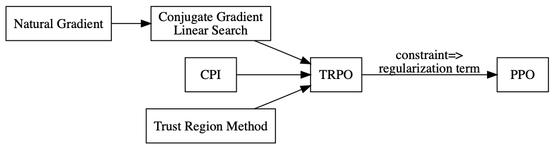
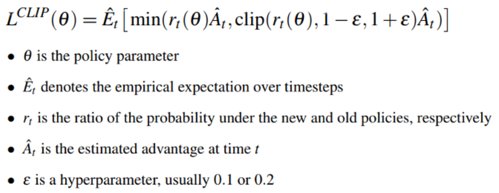

问题描述
- 策略梯度算法的更新步长很重要
- 步长太小，导致更新效率低下
- 步长太大，导致参数更新的策略比上次更差，通过更差的策略采 样得到的样本更差，导致学习再次更新的参数会更差，最终崩溃
- 如何选择一个合适的步长，使得每次更新得到的新策略所实现的回报 值单调不减
解决方案
- 信赖域 (Trust Region) 方法指在该区域内更新，策略所实现的回报 值单调不减
知识背景
-
自然梯度
- Natural Gradient Works Efficiently in Learning, 1998
- 在黎曼空间里面，最快的下降方向不是梯度方向，而是自然梯度方向\(G^{-1}(\theta )J(\theta )\)
- 只有当坐标系统正交，才退化成欧式空间
- 神经网络中的参数空间是黎曼空间
- 其中\(G\)为 Reimannian metric tensor
- 统计问题中，\(G\)可以用 Hessian 矩阵去计算
-
保守策略迭代
- CPI: Approximately Optimal Approximate Reinforcement Learning, 2002
- 给出策略性能增长的条件
- 策略更新后的所有优势函数非负
- 使用混合更新的方式更新策略
TRPO
- Trust Region Policy Optimization, ICML2015
- 以 CPI 为基础，推导出策略更新后性能的下界, 通过优化下界优化原函数
- 实际操作时用 KL 散度作为约束
- 求解带约束的优化问题时，利用自然梯度
- 自然梯度需要求2阶导数，在大规模的神经网络里极其难求
- 实际求解是利用了共轭梯度 + 线性搜索的方法, 避免求自然梯度
PPO
-
核心思想
- Proximal Policy Optimization Algorithms, 2017
- Openai blog(https://blog.openai.com/openai-baselines-ppo/)
- TRPO 太复杂，普通 PG 效果又不好
- PPO 本质上是 TRPO 的简化版
- 移除了 KL 惩罚项和交替更新，把它变成了正则化项，写到目标函数里
- 由于性能好，且容易实现，已经成为默认的 OPENAI 算法
-
知识图谱

-
核心步骤

- 实现非常简单
其他信赖域算法
-
ACKTR
- Scalable trust-region method for deep reinforcement learning using Kronecker-factored approximation
-
ACER
- Sample Efficient Actor-Critic with Experience Replay
-
GAE
- High-Dimensional Continuous Control Using Generalized Advantage Estimation
- 在估计advantage函数的时候，不是用传统的TD误差值去更新，而是用一种迭代的形式去更新
- 基本上所有用到advantage的方法，用了这个trick之后，效果都会有所提升